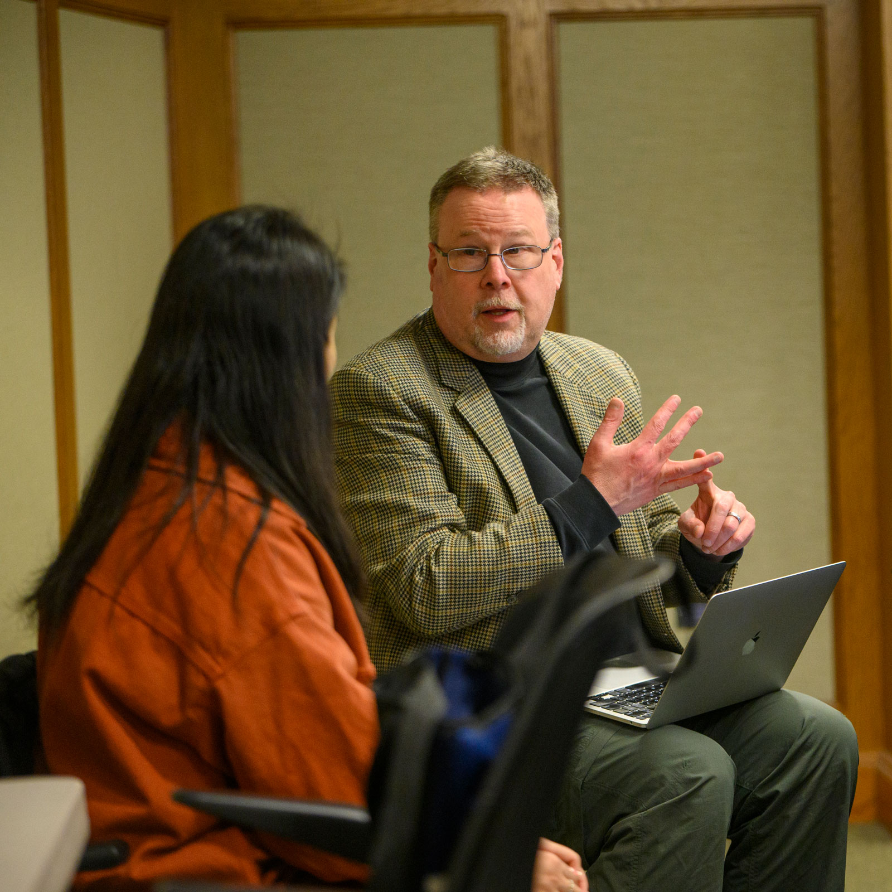

Close Your Project Responsibly
Close your project responsibly, evaluate your outcomes, and articulate your real-world experience for your future career.
The Power of Closing Well and Reflecting Deeply
A project is not complete simply because the final deliverable has been handed over. The final stages—closing, reflecting, and translating—are what transform a transient project into lasting organizational value and personal career momentum.
Responsible handoffs ensure that partners are not left with abandoned tools or undocumented systems they cannot maintain. Simultaneously, structured reflection forces you to pause and ask: What did I learn about my technical skills, my teamwork style, and the ethical impact of my work? Without reflection, experience is just something that happened to you; with reflection, experience becomes expertise. Learning to translate complex, messy project narratives into clear resume bullets and portfolio case studies is what turns your UMSI education into your greatest professional asset.
Track A: Ending the Experience (Responsible Offboarding & Handoff)

-
Value & Narrative
Responsible offboarding is an ethical mandate in engaged learning. Delivering high-quality technical assets is only half the job—ensuring the community partner or client can independently maintain, update, and benefit from your work long after the semester ends is what defines a successful project.
-
Focus & Objectives
- Completing & Transitioning Work: Package code, design files, reports, and technical assets into accessible, usable formats for your partner.
- Closing Relationships Appropriately: Formally conclude the project with gratitude, clarity, and clear future boundaries.
- Evaluating Impact: Measure project outcomes against initial scoping goals and gather client feedback.
-
Featured Resources & Handouts
Track B: After the Experience (Career Integration & Portfolios)
-
Value & Narrative
Employers do not just hire technical skills—they hire people who can solve unscripted problems, collaborate in diverse teams, and deliver results under realistic constraints. This track guides you in bridging the gap between your academic work and your professional brand, helping you articulate the full narrative of your growth.
-
Focus & Objectives
- Articulating Skills: Translate unscripted, complex project work into compelling resume bullets and interview responses.
- Portfolio Integration: Document your process, artifacts, key decisions, and measurable outcomes.
- Maintaining Networks: Keep professional touchpoints open with mentors, community partners, and teammates.
-
Featured Resources & Handouts